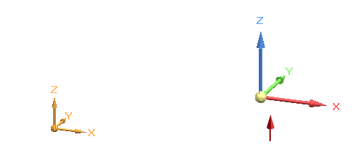
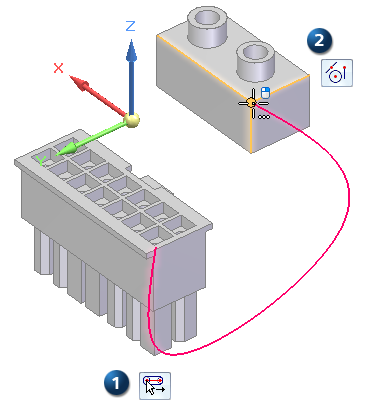

Create a 3D curve
-
Choose 3D Sketching tab→3D Draw group→3D Curve command
 .
. -
On the 3D Curve command bar, from the Locate Filter list , select the type of elements you want to locate to define the path.
For all element filters, the OrientXpres triad is displayed for you to specify the axis or plane for the curve to follow. To learn how to use the triad while defining 3D curve points, see OrientXpres tool.

-
Select the All Keypoints
 option to be able to locate and select any IntelliSketch keypoints on elements in
the model.
option to be able to locate and select any IntelliSketch keypoints on elements in
the model. -
Select the Cylindrical Faces
 filter to use a cylindrical axis, so that the curve passes through and connects to
both ends of the cylinder. You can locate wireframe arcs, circles, 2D or 3D sketch
curves, as well as cylinder, cone, toroid and revolved feature faces.
filter to use a cylindrical axis, so that the curve passes through and connects to
both ends of the cylinder. You can locate wireframe arcs, circles, 2D or 3D sketch
curves, as well as cylinder, cone, toroid and revolved feature faces. -
Select the XYZ Point
 option when you want to click any x, y, z point in free space, and to specify the
offset values for each subsequent keypoint. The default values populate on the command
bar. You can update or change the default values and add the required XYZ values.
option when you want to click any x, y, z point in free space, and to specify the
offset values for each subsequent keypoint. The default values populate on the command
bar. You can update or change the default values and add the required XYZ values. -
Use the None option when you want to turn off keypoint location, yet route the curve using a midpoint, end point, or silhouette point.
-
-
Click to place the starting point for the curve. Refer to the PromptBar to see the options that are available based on your selected location filter.
-
Continue to click points for the curve. Each point along the route acts as a control point for you to use to edit the curve.
-
If you clicked a cylindrical face to define the previous point, then you can click Flip
 to change the direction of the curve as it passes through the cylinder.
to change the direction of the curve as it passes through the cylinder. -
You can change the direction axis or plane on the triad as you define points, for example, to place the curve across planes.
-
You can change your locate filter option as you click points to define the curve.
Example:The start point (1) was defined using the Cylindrical Faces location filter.
The end point (2) was defined using the All Keypoints location filter.

-
-
Click to specify the last point in the curve, and then right-click in free space to finish the curve.
-
Define the tangency condition for start and end points of the 3D curve—When you select a keypoint on a wireframe element or edge as the endpoint of the curve, you can specify whether the curve is created tangent to the wireframe element or edge you selected. When you specify that the curve is tangent to an element at its endpoint, you can also modify the magnitude of the tangent vector by dragging the tangent vector handle to a new location. When you modify the magnitude of the tangent vector, you also may change the radius of curvature of the curve.
-
Click Tangency Conditions (1) to display the edit control boxes directly on the curve. You also can click Show/Hide Tangency Control Handles (2) to define the end conditions using the command bar.


-
From the Start list and from the End list, choose a tangency condition. Available options may include Natural, Curvature Continuous, Normal to Face.
The tangency condition specifies the edit direction for the curve path when you drag the tangency control handle.
-
In the adjacent edit box, enter a length value. This value specifies the magnitude of change when you drag the tangency control handle.
In this example, the start point was defined as continuous curve and the end point as normal to face.

-
-
To finish the curve, right-click in free space and then click the Select command.
-
When editing a curve, you can hold the Alt key and click to add points to the curve or to remove points from a curve. As you add or remove points, the shape of the curve changes.

To remove a point, Alt+click the point you want to remove.
To insert a point along a path, Alt+click the location along the curve where you want to add the point.
To add a segment to the end of the curve, Alt+click a point in free space.
-
To close or open previously created curves without adding or removing points, use the Close Curve option. Select the curve to edit, and then select or clear the Close Curve button on the command bar.
-
You can control the display of the curve and change its length using the options on the 3D Curve command bar. In synchronous mode, double-click the curve to edit. In ordered mode, select the Edit Definition command and click the curve. For more information, see Dynamically edit a 3D curve.
How do I
Draw a 3D sketchCreate a 3D point using coordinates
Modify a 3D point
Dynamically edit a 3D curve
Route a 3D sketch path between 2 points
Route a 3D curve through circular faces
Mirror 3D sketch elements
Create an equation driven curve
Split a 3D sketch element
Move 3D sketch elements
Learn more
Starting a new synchronous 3D sketchStarting a new ordered 3D sketch
Starting a new assembly 3D sketch
3D sketch relationships
Look up more details
New 3D Sketch command3D Sketch command (assembly)
Show 3D alignment lines
Activate command (3D sketching)
Copy Dimensions to Model command
3D Point command
3D Point command bar
3D Line command
3D Circle by Center command
3D Rectangle by Center command
Tangent 3D Arc command
3D Arc by 3 Points command
3D Curve command
3D Curve command bar
OrientXpres tool
Routing Path command
Route command
Equation Driven Curve command
Equation Driven Curve command bar
Equation Driven Curve dialog box
Mirror command (3D Sketching)
3D Fillet command
3D Trim command
3D Include command
Related Topics
Enable Regions command (3D sketching)Split 3D Sketch command